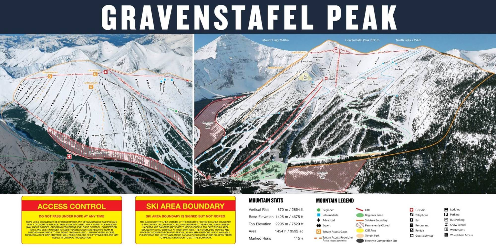
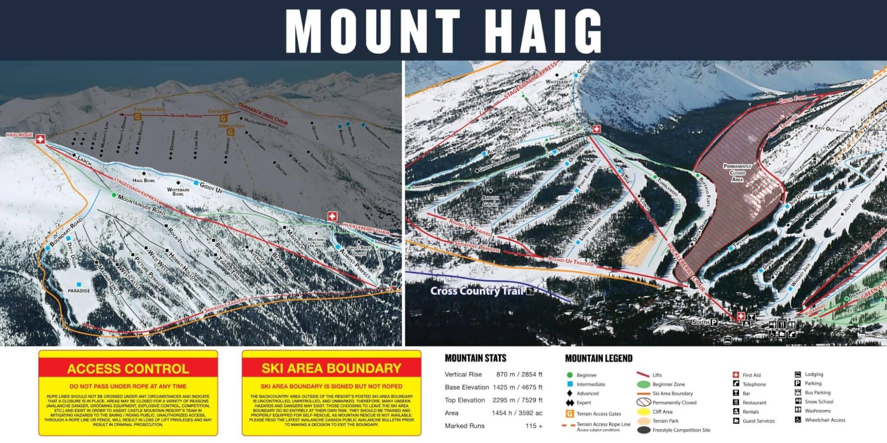

The 2027 race runs January 8 to 10. Start times, courses and the other details below follow the most recent edition and are subject to change, including on race day for weather and snow conditions.
Course maps and GPS tracks are approximate. They are provided for general information and planning only, and may not show the exact race route, current terrain or hazards.
Courses are set and marked on race day and can change at any time, before or during the race, for snow, weather, avalanche conditions or resort operations. Always follow the course flagging and the instructions of race officials and volunteers. Do not rely on a map, GPS track or device to navigate the course.
Three days of ski mountaineering racing: the Vertical on Friday, January 8, the Sprint on Saturday, January 9, and the Individual on Sunday, January 10, 2027. Race one, two or all three. All races follow the ISMF sport rules.
Divisions
- Adult (18+): Competitive and Recreational
- Junior (under 18)
- Masters (35+)
Vertical · Sprint · Individual · Rules and gear · Trail maps
Friday, January 8: Vertical Race
One climb, start to finish. 449 m (1,473 ft) of elevation gain over about 1.5 km.
Route
- Start at Whiskey Jack
- Follow Jelly Roll
- Right into Easy Street
- Trend up, under the T-Bar, and left towards South Bowl
- Finish near the top of the T-Rex T-Bar
Schedule
- 3:30 to 3:45 pm: bag drop and start line instructions
- 4:00 pm: race start
Required gear
Helmet. Pack warm clothing into a bag for pickup at the finish.
Last updated
- Race route
- Easy
- Intermediate
- Advanced / expert
- Lifts
Approximate route only. The race-day course is set by the flagging on the snow and may change for conditions. Read the full notice.
Saturday, January 9: Sprint Race
A short, fast course on Whiskey Jack with two uphill skinning sections, one boot-pack and one downhill slalom section. About 65 m (213 ft) of gain and loss on a lap of about 500 m, raced as qualifiers, heats and finals.
Schedule
- 10:00 am to 12:00 pm: course open for warm-up; bib assignments and waivers in the Day Lodge
- 1:00 pm: technical briefing (be at the start corral before 1:00 pm)
- 1:30 pm: qualifiers
- 2:00 pm: heats
- About 2:30 pm: finals
Required gear
- Skis or splitboard with bindings
- Skins
- Poles
- Boots
- Backpack (rucksack) with two fastening straps or attachment points for carrying your skis or splitboard during boot-packs. Skis cannot be carried in the shoulder straps.
- Helmet
- Gloves covering the whole hand to the wrist
- Hat, toque or similar
- Warm layers for between heats
Last updated
- Race route
- Easy
- Intermediate
- Advanced / expert
- Lifts
Approximate route only. The race-day course is set by the flagging on the snow and may change for conditions. Read the full notice.
Sunday, January 10: Individual Race
The main event: a full ski mountaineering course across Gravenstafel Ridge and Mount Haig, with skinning, a boot-pack, and descents featuring Castle's iconic chutes.
1,505 m
About 4,937 ft of elevation gain and loss over six legs and about 11.4 km.
1,170 m
About 3,837 ft of elevation gain and loss over about 8 km.
The route
- Start below the Green Chair at the base of Castle Mountain Village and climb about 894 m
- Summit North Peak, with a short descent and boot-pack
- From the top of the Red Chair, go through the Chutes gate and descend the Chutes to the valley bottom (about 772 m)
- Follow the Cinch Fork trail to the transition area, skins back on, and climb to Haig Ridge
- Recreational racers descend from Haig Ridge to the finish
- Competitive racers continue up the Haig Ridge cat road to the cat ski boundary, then descend and follow Round Up Traverse to the finish
Schedule
- 9:45 am: report to the start area for beacon check and pre-race instructions, including route changes and cut-off times
- 10:00 am: race start, all divisions
- 12:30 pm: cut-off at Haig Ridge for the competitive course
- 2:00 pm: provisional results and appeal period
- 3:00 pm: awards for all three races, including the Wright Stuff Award silent auction
The finish is at the base of Whiskey Jack. Volunteers move racer bags from the start to the finish.
Required gear
- Skis or splitboard with brakes or leashes
- Skins, poles and boots
- Avalanche transceiver
- Snow shovel
- Snow probe (minimum 2.4 m)
- Survival blanket
- Whistle
- Helmet
- Backpack (rucksack) with two fastening straps or attachment points for carrying your skis or splitboard during boot-packs. Skis cannot be carried in the shoulder straps.
- Sunglasses
- Gloves covering the whole hand to the wrist
- Hat, toque or similar
- Upper body: at least 3 long-sleeved layers, one a wind stopper
- Lower body: at least 2 layers of long pants, one a wind stopper
Download latest competitive GPX
Last updated
Download latest recreational GPX
Last updated
- Competitive
- Recreational
- Easy
- Intermediate
- Advanced / expert
- Lifts
Approximate route only. The race-day course is set by the flagging on the snow and may change for conditions. Read the full notice.
Rules and mandatory gear
These rules follow Skimo Canada (Ski Mountaineering Competition Canada, SMCC) and are based on the ISMF sport rules for international ski mountaineering competition.
On course
- Race number secured to your right thigh
- Helmets are mandatory
- Skis or splitboard fastened to your backpack with two straps for all boot-pack sections (yellow flags), not carried in your hands or shoulder straps. If a ski comes loose, stop and reattach it before continuing.
- Poles flat on the ground during transitions
- Green flags mark up tracks, red flags mark down tracks, yellow flags mark boot-packs
- Follow volunteer instructions at every transition
- It is mandatory to stop and help any racer in distress
- Follow the Alpine Responsibility Code at all times
- If you cannot finish, report to a transition volunteer and to the finish area
Race briefings
There will be two race course and weather/snow conditions briefings: one before the Sprint at final registration and the technical meeting, and one just before the start of the Individual. One briefing will precede the Vertical.
Summary rules
- The listed mandatory gear must be carried by the racer throughout the entire race and be available for inspection at any time.
- Competitors must arrive at the starting area at the time set.
- The Race Director reserves the right to modify the event and race course at any time for safety reasons.
- The route passes sequence points (unoccupied) and checkpoints (with a course official).
- The track is marked with green flags on the ascents, red flags on the descents and yellow flags for boot-packs.
- Sequence points (generally changes in course direction) are marked with square flags or banners on bamboo poles, and should be passed within 2 metres.
- Control points (transitions to or from skinning or skiing) are marked with square flags or banners on bamboo poles and/or have a course marshal present, and should also be passed within 2 metres.
- At each manned gate or checkpoint, racers should shout their number for the course marshal recording.
- A GPS can be carried and may be used on the course. Cell phones may be carried for emergency use, but must be off during racing so they do not interfere with transceiver signals.
- In case of withdrawal during the race, the competitor must notify the race organizers (via the closest checkpoint) by any means and as quickly as possible.
- The organizers reserve the right to force a competitor to withdraw for health or safety reasons, or for requiring extended time to finish.
- Bib numbers are reserved exclusively for the markings printed by the organization. They must be worn on the right thigh over all other clothing.
- Waivers must be signed by all racers at the pre-race meeting.
Competitor behaviour
- Any competitor who is caught must immediately yield the trail to the competitor who calls “TRACK”.
- Any competitor in difficulty may abandon the race on their own initiative, or be taken out of the race by decision of the Race Director, Race Coordinator, Ski Patrol or the Race Doctor.
- Abandoning or being taken out of the race should take place at a checkpoint except in extreme circumstances.
- All racers are obliged to come to the aid of a person in danger. The Race Director will take into account the time spent providing assistance.
- Any failure to obey the rules of conduct that is reported to or seen by the Race Director will be dealt with under the ISMF rules and examined by the Race Director. This may result in a disciplinary council.
- No external material assistance is permitted.
- Competitors awarded in any category at SMCC events must attend the award presentation to receive prizes, and should ask the Referee’s permission if there are extenuating circumstances.
Suspension of the event
- If a competition must be suspended because of circumstances beyond the organizer’s control, ranking will be determined on the basis of times and points at the last checkpoint.
- If some racers have crossed that checkpoint and conditions are good enough for competition, they will be neutralized at the next checkpoint (or at the finish line if there is no other intermediate checkpoint). Ranking will be determined first by arrival order at that checkpoint, then by racers at the previous checkpoint.
- If racers have crossed that checkpoint but conditions are not good enough for competition (avalanches, bad weather, missing course marking), ranking will be determined on the basis of times and points at the last checkpoint.
Disqualifications, penalties and claims
All disputes will follow the ISMF sport rules and be ruled on by the Race Dispute Committee.
Procedure in case of emergency
For safety reasons, extreme weather conditions or other exceptional factors, the Race Director is authorized to make any decision they deem appropriate if proper safety conditions can no longer be met.
Image rights
By registering, competitors agree to these regulations and accept the use by the host resort and the Alpine Club of Canada, and their partner media, of photos and filming done during the events, without any restriction in time, type of medium, quantity or means of distribution. This includes the copyright, free of charge, of all photos and video taken during the race for all commercial, promotional or advertising purposes in all media, including the internet. All rights are reserved concerning the use of images from SMCC-sanctioned races.
Mandatory gear list
All races and competitor categories have the following mandatory gear list (per the ISMF sport rules). We reserve the right to check this equipment in detail before, during and after the race. To do this we need the understanding and co-operation of participants: the better prepared you are, the faster the process. You must have all of your mandatory equipment at the gear check immediately after the race finish.
Ski equipment
Skimo Canada allows telemark and splitboard set-ups in its races. To be allowed, skis, boots, bindings and poles must be a telemark or splitboard set-up in the eyes of the equipment judges. Cross-country ski equipment will not be accepted. Otherwise, all competitors must meet the ski equipment requirements of the ISMF rules for official races:
- Skis: metal edges on at least 90% of their length, and at least 60 mm wide underfoot. At least 160 cm long for men and 150 cm for women.
- Bindings: must allow heel movement when ascending or descending, and be equipped with security straps or ski brakes. Ski brakes are mandatory under ISMF rules; SMCC teams must use ski brakes (effective winter 2021/22), but recreational racers can use security straps. Front and rear bindings must have lateral and frontal release safety systems. Cross-country ski bindings and boots, or their derivatives, are strictly forbidden.
- Minimum ski weight (ski + binding): men 750 g per ski (1,500 g per pair); women 700 g per ski (1,400 g per pair), without tolerance.
- Boots: high enough to cover the ankles, with notched Vibram or similar mountaineering soles (covering at least 75% of the foot, notches at least 4 mm deep, at least 8 notches on the heel and 15 on the forefoot, each notch at least 1 cm²). Boots must take metal crampons and have at least 2 buckles.
- Minimum boot weight: men 500 g per boot (1,000 g per pair); women 450 g per boot (900 g per pair), without tolerance.
- Ski poles: a pair of alpine or cross-country poles, maximum 25 mm diameter, with non-metallic baskets. Carbon poles are not advised.
- Skins: scotch-cote, tape or similar used to improve glide are strictly forbidden (for environmental reasons).
Clothing (minimum required to carry)
- Two layers for the lower body: 1. insulating, 2. waterproof/breathable.
- Three layers for the upper body: 1. insulating, 2. insulating, 3. waterproof/breathable.
- All clothing must be full length (long sleeves and legs) and fit the competitor. Extra clothing may be specified at the time of the race.
- Gloves covering the whole hand.
- Warm hat covering the whole head.
- Sunglasses.
Safety equipment
- Avalanche beacon: 3-antenna type, operating on 457 kHz, worn and turned on at all times.
- Avalanche shovel: commercially made snow shovel as defined by the manufacturer, not modified after purchase. Snow claws are not permitted.
- Avalanche probe: minimum 240 cm long and 10 mm diameter.
- Bivi sack or survival blanket: waterproof and large enough to give complete protection from the elements, at least 1.8 m².
- Backpack: 20 litres minimum, of standard manufacture, with two fastening straps or attachment points for carrying your skis or splitboard during boot-packs. Skis cannot be carried in the shoulder straps.
- Helmet: compulsory. Climbing, cycling or other lightweight sport-specific helmets are allowed, unaltered from the manufacturer’s specifications. Must be worn on all descents. SMCC teams must use dual-certified helmets (effective winter 2021/22).
- Whistle: on your person or the outside of your backpack.
Additional mandatory gear
The local organizer may stipulate additional mandatory gear. Skimo Individual races have limited support along parts of the route, and the equipment you carry may become crucial in some circumstances. Organizers and officials reserve the right to add items to the required equipment if the course or conditions warrant it, including extra clothing, a headlamp, climbing harness, carabiners or crampons.
Food and water will be available only before the start and after the finish of the race. Each competitor must carry what they feel they will need.
Resort trail maps
The Castle Mountain Resort trail maps show the terrain the races cross. Interactive maps and GPX tracks for each race are with the race details above.



